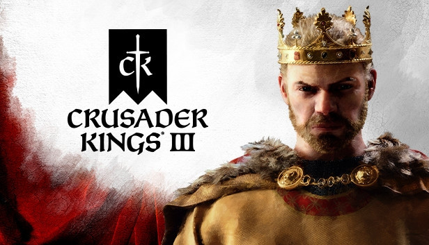
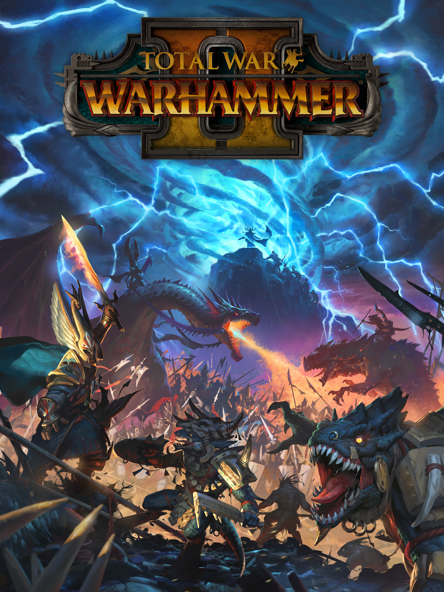

| Game | Description |
|---|---|
|

Crusader Kings III |
Crusader Kings III is a grand strategy role-playing video game set in the Middle Ages, developed by Paradox Development Studio and published by Paradox Interactive as a sequel to Crusader Kings and Crusader Kings II. |

Age of Empires IV |
Age of Empires IV is a real-time strategy video game developed by Relic Entertainment in partnership with World's Edge and published by Xbox Game Studios. It is the fourth installment of the Age of Empires series. The game was released October 28, 2021 for Windows. |
|

Total War: Warhammer II |
Total War: Warhammer II is a turn-based strategy and real-time tactics video game developed by Creative Assembly and published by Sega. It is part of the Total War series and the sequel to 2016's Total War: Warhammer. The game is set in Games Workshop's Warhammer Fantasy fictional universe. |